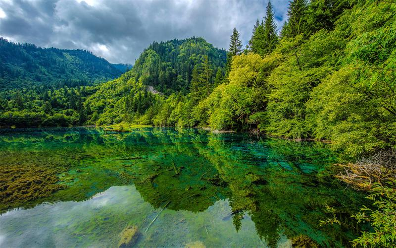
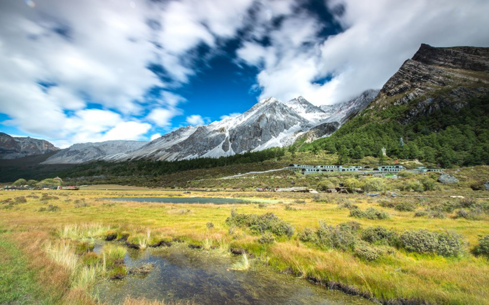
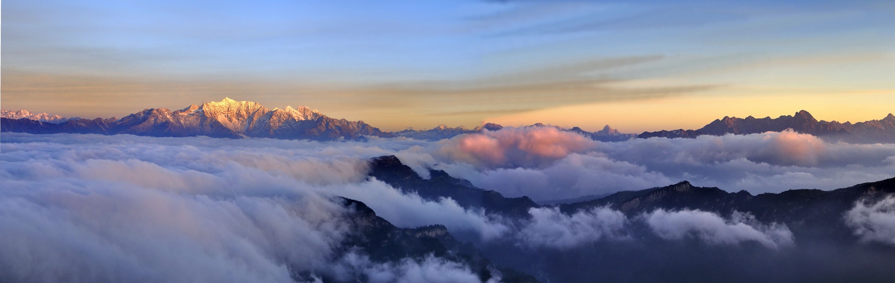
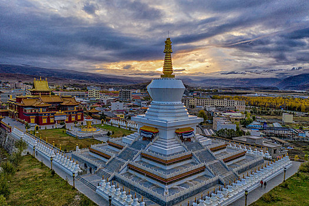
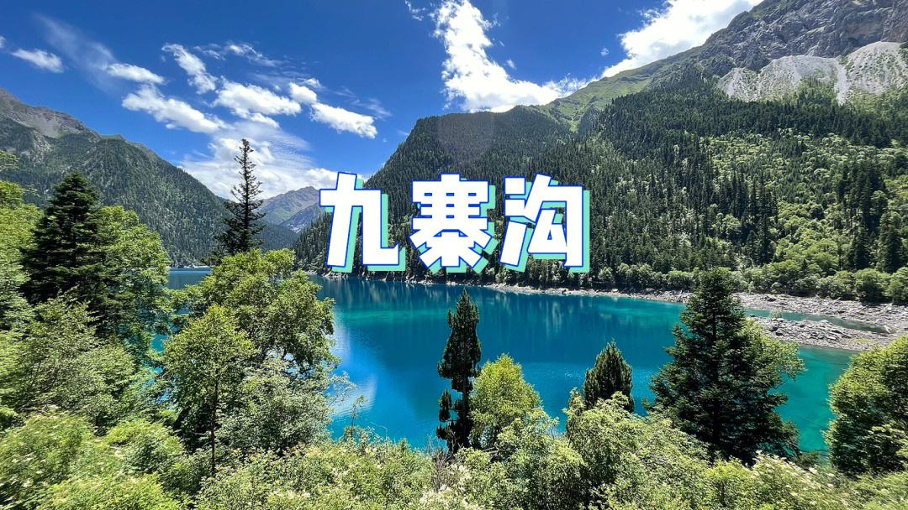
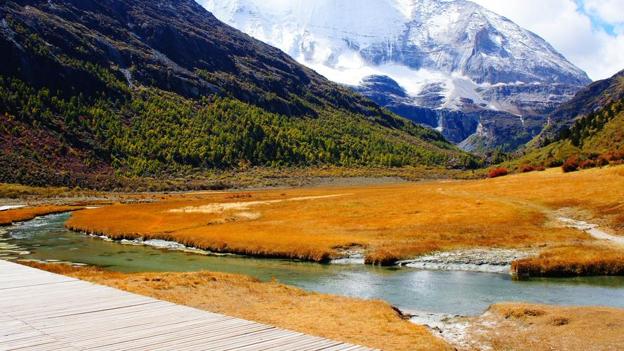
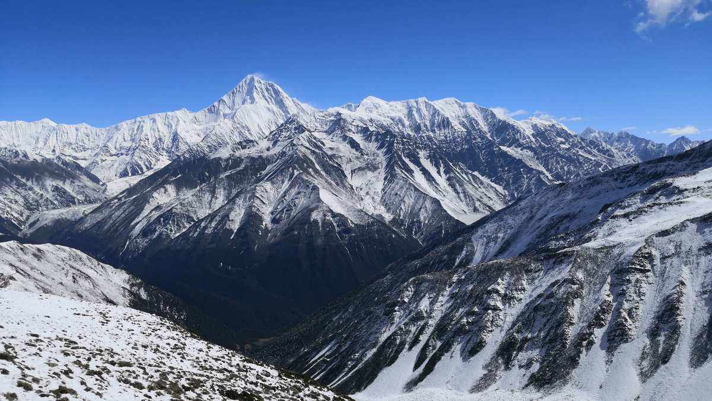
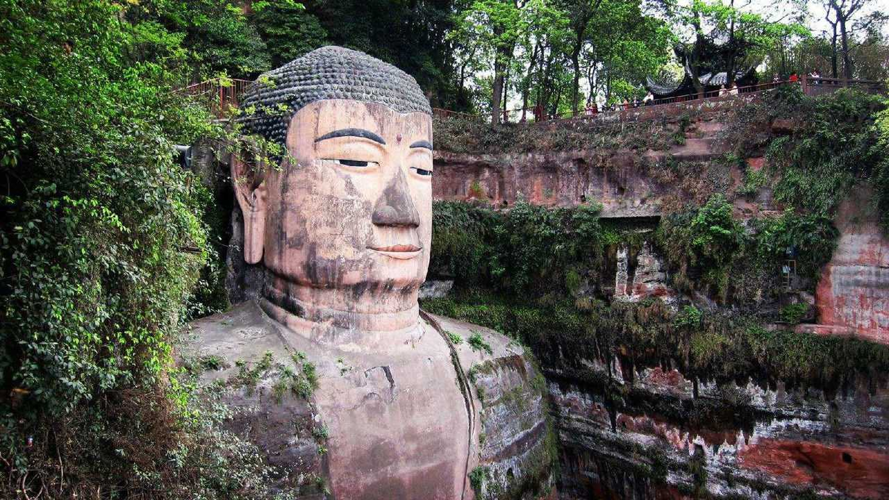

- 
- 
- 
- 

九寨沟
九寨沟位于四川省西北部岷山山脉南段的阿坝藏族羌族自治州九寨沟县漳扎镇境内，地处岷山南段弓杆岭的东北侧。距离成都市400多千米，系长江水系嘉陵江上游白水江源头的一条大支沟。 九寨沟自然保护区地势南高北低，山谷深切，高差悬殊。北缘九寨沟口海拔仅2000米，中部峰岭均在4000米以上，南缘达4500米以上，主沟长30多公里。

稻城亚丁
亚丁国家级自然保护区地处青藏高原横断山脉的东南部，是我国地貌上从最高一级地貌单元青藏高原向第二级地貌单元云贵高原的过渡地带。区内高大山体密集，谷岭高差普遍大于3000米，从而形成相对封闭的自然地理环境，保护区同时发育了高山、极高山、高山峡谷、冰川宽谷、现代冰川等不同的地貌类型。

贡嘎山
贡嘎山坐落在青藏高原东部边缘，位于四川省康定、泸定两县分界处，是横断山脉大雪山的主峰，海拔7556米，东经141.8度，北纬29.6度，是四川省第一高峰，被誉为“山中之王”。贡嘎山是中国冰川最为发达的山峰之一。贡嘎山是进行登山探险和高山旅游的胜地。

青城山
中国道教的发源地、天师道的祖山祖庭，凝聚了中国道教文化的精髓，被道教列为“第五洞天”，至今仍完好地保存有数十座宫观，可以说，青城山是一座纵横千百年的活的道教“博物馆”。这里山林幽深、古道幽静、山花幽香、鸟鸣幽趣、亭阁幽雅、溪流幽清，故有“青城天下幽”的美誉。